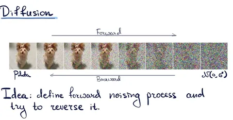

Авторы CV Time не только пишут обзоры статей о компьютерном зрении, но и создают обучающие курсы.
Сегодня делимся курсом ШАДа «Генеративные модели в компьютерном зрении», который ведёт Дмитрий Баранчук, руководитель группы GenAI в Yandex Research, вместе с праймовой командой исследователей в этой области.
Будет полезно тем, у кого есть базовые знания по генеративкам и желание разобраться глубже:
• в теории диффузионных моделей, эффективных методах их обучения и семплирования;
• в новых гибридных моделях на основе диффузии для генерации изображений, видео и 3D.
У курса есть открытый GitHub-репозиторий, где можно найти слайды, записи лекций и семинаров, а также домашние задания.
CV Time
